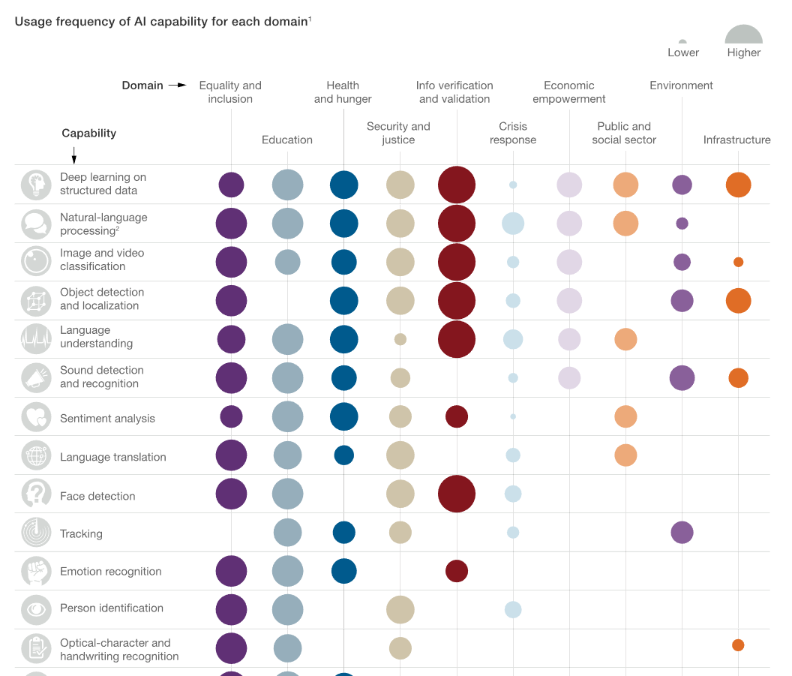

Nowadays Progress
Industry Report
Mckinsey recently public a research towards AI capabilities mapped to their potnetial uses in several domains where they may be of societal benefit. And Health and Hunger ranks the third in all those domains.
Visit Mckinsey Company Web for further information
Recent Researches
Besides, studies have explored the current issues and potential solutions related to the application of AI in healthcare from various perspectives, including medical, patient, ethical, and legal perspectives. These studies provide insights into the potential of AI in healthcare, as well as the challenges and ethical considerations that need to be addressed to fully realize its potential.
Legal perspective
Transparency and traceability have to meet even higher standards when it comes to health care and the individual patient. Following the two aspects, the research purpose three main perspectives, which are: (1) Informed consent, (2) Certification and approval as medical devices (acc. to Food and Drug Administration/FDA and Medical Device Regulation/MDR) and (3) Liability.
Medical perspective
Artificial intelligence currently cannot guarantee 100% accuracy. Therefore, from a medical perspective, attention needs to be paid to how responsibility should be allocated if AI makes mistakes.
Moral perspective
In terms of ethical considerations, studies have proposed that the introduction of AI involves four key principles: autonomy, beneficence, nonmaleficence, and justice
Pacient perspective
Patient engagement and adherence has long been seen as the ‘last mile’ problem of healthcare – the final barrier between ineffective and good health outcomes. In a survey of more than 300 clinical leaders and healthcare executives, more than 70% of the respondents reported having less than 50% of their patients highly engaged and 42% of respondents said less than 25% of their patients were highly engaged.
Reference
Amann, J., Blasimme, A., Vayena, E. et al. Explainability for artificial intelligence in healthcare: a multidisciplinary perspective. BMC Med Inform Decis Mak 20, 310 (2020). https://doi.org/10.1186/s12911-020-01332-6
Davenport T, Kalakota R. The potential for artificial intelligence in healthcare. Future Healthc J. 2019 Jun;6(2):94-98. doi: 10.7861/futurehosp.6-2-94. PMID: 31363513; PMCID: PMC6616181.
Visit Explainability for artificial intelligence in healthcare: a multidisciplinary perspective for further information
Visit The potential for artificial intelligence in healthcare or further information